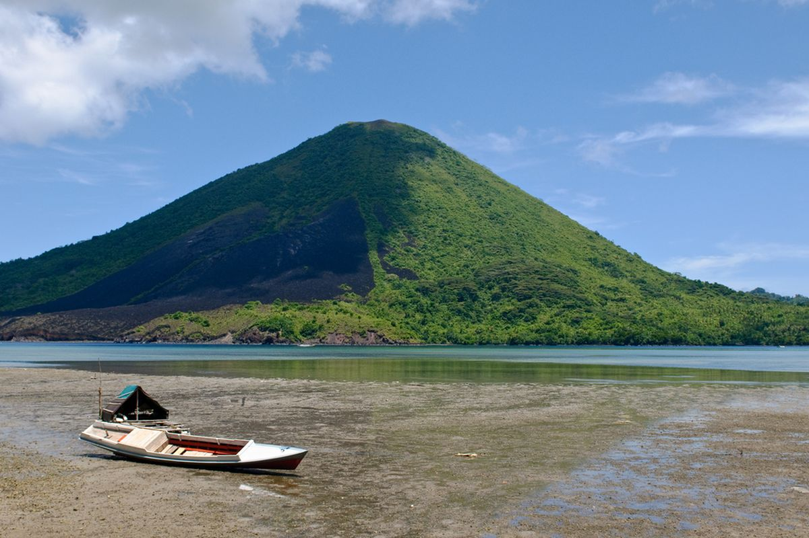
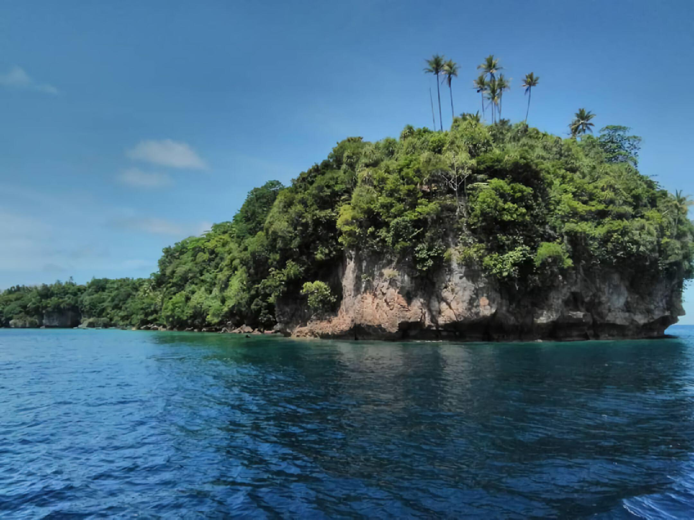

Banda Neira : Surga dari Timur Indonesia

Adapun Banda Neira atau Banda Naira adalah salah satu dari 10 pulau vulkanik di Kepulauan Banda di provinsi Maluku. Mendapat julukan sebagai Surga dari Timur, Banda Neira memiliki kekayaan dan keindahan alam yang luar biasa. Lautnya penuh dengan karang menawan dan kehidupan laut yang melimpah. Sehingga, menjadikan Kepulauan Banda tidak hanya destinasi yang kaya secara historis, tetapi juga tempat menyelam yang diakui secara internasional.
Destinasi Wisata yang Terkenal di Banda Neira :
1. Benteng Belgica
Benteng Belgica merupakan benteng VOC yang dibangun pada 1611 di bawah pimpinan Gubernut Jenderal Pieter Bot ini memang sangat menakjubkan. Menurut sejarah, benteng ini sebenarnya merupakan salah satu peninggalan Portugis yang awalnya berfungsi sebagai pertahanan. Namun pada masa penjajahan Belanda, Benteng ini beralih fungsi untuk memantau lintas kapal yang keluar masuk Banda.
2. Gunung Api Banda
Gunung Api Banda adalah sebuah gunung berapi, sekaligus sebuah pulau yang terletak di Kepulauan Banda. Gunung api yang masih aktif ini memiliki ketinggian 1.955 kaki atau 656 meter di atas permukaan laut (mdpl). Dibutuhkan waktu sekitar dua jam untuk dapat sampai ke puncak gunung ini.
Sumber foto: Gunung Api Volcano, Banda Islands, Indonesia.(Shutterstock/javarman)
3. Pulau Pisang
Pulau Pisang merupakan salah satu pulau yang berada di gugusan Kepulauan Banda dan berpenghuni di Maluku. Pulau Pisang hanya memiliki sekitar 50 orang penduduk, satu perkebunan pala dan satu perkebunan kelapa. Nama lain pilau ini adalah Pulau Sjahrir, karena pada zaman dahulu Sutan Sjahrir sering mengunjungi pulau ini dan menjadi lokasi favorit beliau.
Salah satu spot terkenal di pulau ini adalah Tanjung Pisang atau dikenal juga dengan Tanjung Serang. Tanjung Pisang layak untuk diselami oleh para pecinta diving. Batas kedalaman maksimum penyelaman di lokasi ni ayaitu sekitar 25 meter dengan kedalaman rata-rata 8 meter. Tanjung Seram memiliki arus lemah sampai sedang searah pantai dan suhu perairan mulai dari 26°C hingga 29°C
Sumber foto: Atourin.com - Pulau Pisang (https://atourin.com/destination/maluku-tengah/pulau-pisang)